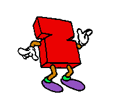
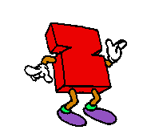
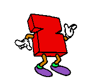
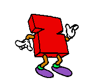
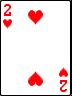
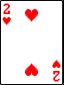

 

Crazy 8s was introduced in 1974 the 1930s and became an instant classic, stealing the hearts of children worldwide, kind of like the Grim Reaper.
4 players begin the game with 8 cards, and the objective is to get rid of all of one's cards first. To play a card, the suit or value must match that of the card last played. 8s are "wild" cards, allowing the person who played it to change the suit to another
In our game, you may play by yourself or as many friends as you like, and the game will make as many computer players as needed to have a four player game.

 

Any card with a value of 2 makes the next player draw 2 cards


Any card with a value of 8 allows the player to change the current suit to whatever they want.


Any Queen makes the next player miss their turn.
You may run into issues with the suit icons not displaying correctly while playing. Don't worry, we have a simple 3-step method to fix this, complete with pictures!
Right-click at the top of the console window
Click on "Properties"
Select "Lucida Console" as the font, and click "OK".
Every player is assigned a 'Player' object. Each object has a String to hold their name, and a hand of cards, which is a Deck object. The hand is public, so that all parts of the game can access it. Player objects require a name in the form of a String to be created. Player objects can show all of the cards in their hand, return the name of the player, add a card to the player's hand when given a card, and sort the cards in the hand by value and suit.
The AI class is a child of the Player class. It can do everything a normal Player can, and is assigned to the players that are controlled by the computer. It is created in the same manner as a Player. AIs can taunt the other players, returning Strings of bad jokes and rude comments.
The Deck class is a child of Java's ArrayList, and so it can be resized and added to and everything just like an ArrayList. A Deck requires no parameters to be created, and is initialized with all 52 cards inside. Decks can be shuffled using the Fisher-Yates algorithm, can return the Card at the top of the Deck, or when given an int value return a Card at that position in the array. Deck can play a card from a specific spot in the deck, which returns a Card and then removes it from the Deck. When given a Card, it can be added to the Deck. Deck can return a boolean value indicating whether or not it is empty, as well as an integer representing the numer of Cards contained within. Deck is used for the deck that all players draw from, as well as each player's indiviual hands.
The Pile class is a child of the Deck class, so it can do everything a Deck can do, only better. Well, that"s debatable. It's created the same way as Deck, but does not contain any cards upon being initialized. Pile can return information on the Card at the top of the Pile, and Cards can be added to the Pile at a specific int position. Pile is used to hold all of the disCARDed cards.
The Card class is kind of important to this game. Each individual card has an int representing it's numerical value, a String representing it's suit, and a String representing the face of the Card (♣5, for example). When created, a Card object needs an int value and a String suit, because most cards have values and suits, right? Cards can return their values in the form of an int, their suits in the form of a String, and their face in the form of a String.
The mainGame class is, well, the main game. It's responsible for creating instances of all the other classes. Most importantly, it gives each player options to view their cards, play a card, pick up a card, and sort their cards when it is their turn. The game class creates the proper number of Players and AIs depending on how many people are playing. The game class is what writes all those messages to the screen so the user knows what's going on. Imagine if I just got rid of every single System.out.println("");.